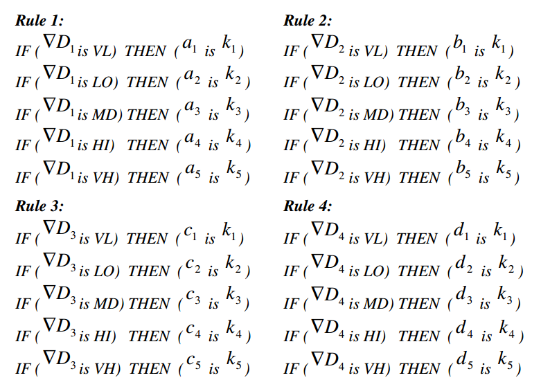
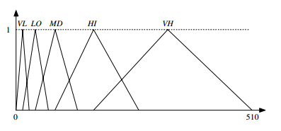
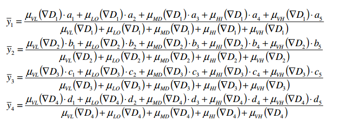
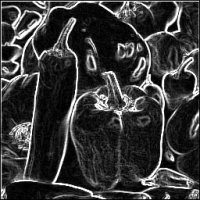
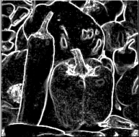

Fuzzy Logic Edge Detection
CSE 6369 - Reasoning with Uncertainty
Joel Martin
Dec 3, 2015
"A New Fuzzy Approach for Edge Detection"
Yasar Becerikli and Tayfun M. Karan
Computational Intelligence and Bioinspired Systems, 2005
PDF
Background: Fuzzy Logic Models
- Mamdani
- Crisp output value using defuzzification
- More intuitive and human meaningful
- Sugeno
- Crisp output value using weighted averages
- Less intuitive but more efficient (no
output membership functions)
Background: Edge Detection
- Core component of most image and video analysis
algorithms especially feature dectection and extraction.
- Edge: Boundary or abrupt change in an image.
Points (line segment) where image brightness changes
sharply.
- Commonly a 3x3 kernel is convolved with the source
image to produce a image representing detected edges.
Edge Example
| 0.1 |
0.2 |
0.1 |
0.8 |
0.8 |
| 0.3 |
0.2 |
0.1 |
0.8 |
0.7 |
| 0.3 |
0.2 |
0.8 |
0.7 |
0.8 |
| 0.3 |
0.2 |
0.7 |
0.8 |
0.9 |
Edge Detection: Sobel Kernel
Horizontal:
Vertical:
Edge Detection: Prewitt Kernel
Horizontal:
Vertical:
Vertical Prewitt Mask Result
| 0.1 |
0.2 * -1 |
0.1 * 0 |
0.8 * 1 |
0.8 |
| 0.3 |
0.2 * -1 |
0.1 * 0 |
0.8 * 1 |
0.7 |
| 0.3 |
0.2 * -1 |
0.8 * 0 |
0.7 * 1 |
0.8 |
| 0.3 |
0.2 |
0.7 |
0.8 |
0.9 |
Vertical Prewitt Mask Result
| 0.4 |
-0.2 |
1.2 |
1.3 |
-1.6 |
| 0.6 |
0.3 |
1.7 |
1.3 |
-2.3 |
| 0.6 |
0.7 |
1.7 |
0.8 |
-2.3 |
| 0.4 |
0.9 |
1.1 |
0.2 |
-1.5 |
Gradients in Each Direction
Assign labels to 3x3 grid:
| z1 |
z2 |
z3 |
| z4 |
z5 |
z6 |
| z7 |
z8 |
z9 |
Calculate gradients:
- ∇D1 = (z5 − z1)2 + (z9 − z5)2 (NW/SE Diagonal)
- ∇D2 = (z5 − z2)2 + (z8 − z5)2 (Vertical)
- ∇D3 = (z5 − z3)2 + (z7 − z5)2 (NE/SW Diagonal)
- ∇D4 = (z5 − z4)2 + (z6 − z5)2 (Horizontal)
Gradients in Each Direction
Approximation with absolute values (for efficiency):
- ∇D1 = |z5 − z1| + |z9 − z5| (NW/SE Diagonal)
- ∇D2 = |z5 − z2| + |z8 − z5| (Vertical)
- ∇D3 = |z5 − z3| + |z7 − z5| (NE/SW Diagonal)
- ∇D4 = |z5 − z4| + |z6 − z5| (Horizontal)
Fuzzy Logic Rules

K values can be modified to affect edge detection
Fuzzy Membership Sets

Directional Components

Final Edge Value
y = y̅1 + y̅2 + y̅3 + y̅4
Results
|
|

|

|
|
|
|
|
| Original |
Prewitt |
Fuzzy |